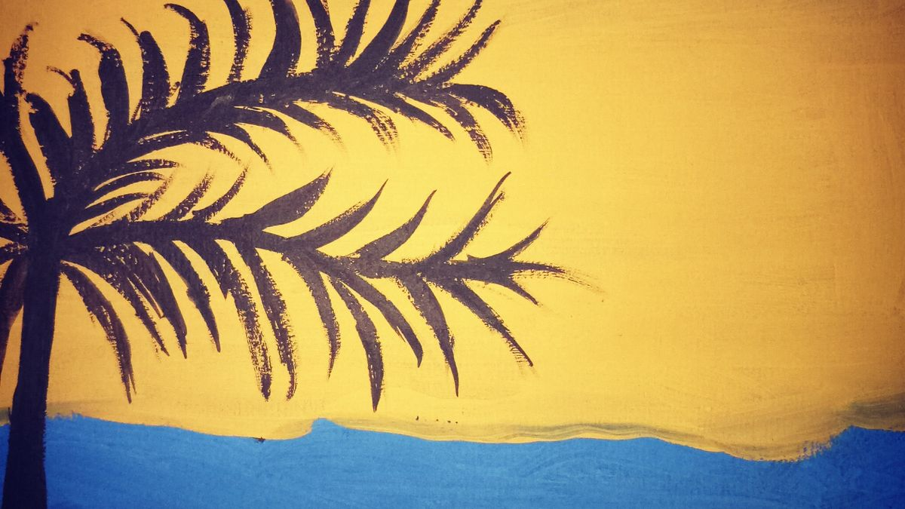
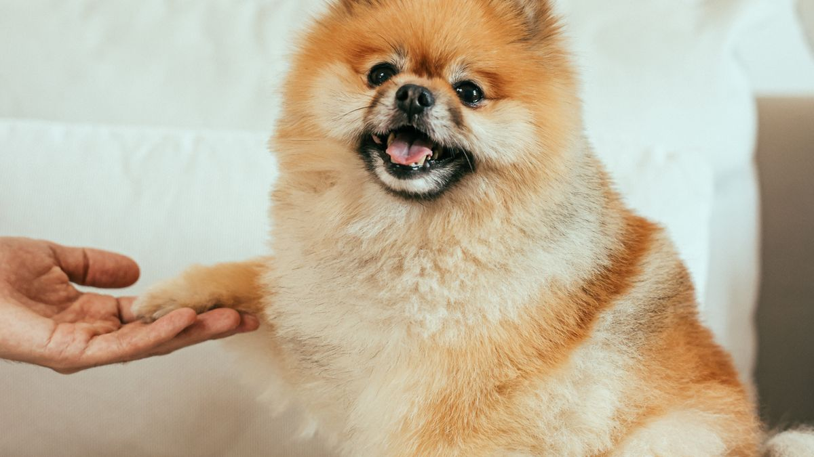

공간 분리 원칙
통로 끝 막다른쪽에 매트 2장을 L자로 배치하면 각자 퇴로가 생깁니다. 한 방에만 두면 쫓고 쫓기는 패턴이 2주 안에 고착화됩니다.

자원 나누기
- 식기·물: 마리수+1, 간격 50cm
- 고양이 화장실: 마리수+1, 시야 차단
- 간식·놀이: 5분 시간차, 같은 방 동시 금지
- 이동장: 개체별 1개, 이름 스티커
급여는 같은 방이 아니라 시야가 겹치지 않는 거리가 더 중요합니다. 벽 모서리·문 뒤처럼 한쪽 시야가 막힌 위치에 식기를 두면 경쟁이 줄어듭니다.
관찰 포인트
식사 속도 2배 차이, 특정 구역 3일 연속 회피, 몸을 낮추고 으르렁—주간 메모. '가끔'은 월 1회 이하, '매일'은 구조 변경 신호입니다.
새 가족 합류 시
첫 2주는 시야만 겹치게(베이비 게이트), 직접 접촉은 5분 세션×하루 2회. 14일 후 반응 보며 시간만 늘립니다.

첫 만남은 냄새 교환(담요 스왑)부터 시작할 수 있습니다. 직접 접촉 5분 세션 전에 각자 휴식 공간에서 충분히 쉬었는지 확인하세요.
실전 적용 노트
다묘·다견 공간은 '넓이'보다 '시야 분리·식사 분리·휴식 분리'가 먼저입니다. 한 방에 모두를 두면 작은 마찰이 누적됩니다.
식사는 1m 이상 떨어뜨리고, 먼저 끝낸 쪽 그릇을 바로 치웁니다. 자원 경쟁이 가장 흔한 갈등 원인입니다.
휴식 매트는 L자·U자로 배치해 서로 등을 보이지 않게 하세요. 출입구 정면 대치는 피합니다.
새 가족 합류는 '냄새 교환→시각 접촉(격리)→짧은 만남' 순서가 안전합니다. 하루 만에 합침은 피하세요.
장난감·캣타워는 개체별로 하나씩 두는 편이 낫습니다. 인기 하나만 두면 다툼이 납니다.
짖음·하악질이 하루 3회 넘으면 7일 일지를 적고, 시간·상황·직전 행동을 기록하세요.
출근·외출 시에는 각자 안전 공간에 두는 시간을 먼저 익힌 뒤 자유 공간을 넓힙니다.
나이·활동량 차이가 크면 놀이 시간을 분리하는 것도 공평합니다.
갈등 후 '누가 잘못'보다 환경을 어떻게 바꿀지 한 가지만 수정하세요.
이번 주 다묘·다견 공간 체크리스트입니다. 넓이보다 분리가 우선입니다.
- 식사 그릇을 1m 이상 떨어뜨렸습니다.
- 먼저 끝낸 그릇을 바로 치웠습니다.
- 휴식 매트를 L자·U자로 배치했습니다.
- 장난감·캣타워를 개체당 1개 이상 두었습니다.
- 새 가족 합류는 단계적으로 진행했습니다.
- 짖음·하악질이 하루 3회 넘으면 7일 일지를 씁니다.
- 외출 시 각자 안전 공간부터 익혔습니다.
- 갈등 후 환경 수정 1가지만 시도했습니다.
다묘·다견 가정에서 평화는 '서로 안 보이게'에서 시작하는 경우가 많습니다.
다묘·다견은 넓이보다 식사·휴식·시야 분리가 먼저입니다. 그릇 1m 이상, 먼저 끝낸 그릇 즉시 치우기, L자 휴식 배치가 기본입니다. 새 가족 합류는 단계적으로, 짖음·하악질이 잦으면 7일 일지를 씁니다. 갈등 후 '누가 잘못'보다 환경 수정 1가지만 시도하세요. 평화는 서로 안 보이게에서 시작하는 경우가 많습니다.
다묘·다견 가정은 '식사 종료 후 그릇 즉시 치우기' 하나만 지켜도 하루 갈등이 눈에 띄게 줄어드는 경우가 많습니다.
마무리로, 이번 주에는 체크리스트 3개만 골라 2주 반복해 보세요. 작은 성공이 쌓이면 나머지는 자연스럽게 늘어납니다.
기록이 쌓이면 병원·상담 때 설명이 쉬워집니다. 한 줄 메모라도 같은 항목으로 이어 쓰는 것이 핵심입니다.
완벽한 루틴보다 80% 지켜지는 루틴이 오래 갑니다. 안 된 날은 원인 한 줄만 적고 다음 주에 조정하세요.
오늘 당장 하나만 고른다면, 체크리스트 맨 위 항목부터 시작해 보세요. 나머지는 다음 주로 미뤄도 괜찮습니다.
가족이 함께 돌본다면, 누가 했는지 체크박스 한 칸만 추가해도 누락·중복이 줄어듭니다.
검색으로 답을 찾기 전에 7일 메모를 먼저 정리해 보세요. 증상 설명이 훨씬 빨라지는 경우가 많습니다.
새 용품·새 사료·새 루틴은 동시에 바꾸지 않습니다. 한 가지만 바꾸고 5일 관찰하는 편이 안전합니다.
이번 달 목표는 '매일 완벽'이 아니라 '이번 주 3회 성공'입니다. 0회에서 1회로 바뀌는 것만으로도 충분한 진전입니다.
스트레스 신호(회피·짖음·숨 가쁨)가 보이면 시간을 반으로 줄이세요. 짧게 자주 성공하는 쪽이 학습에 유리합니다.
계절·이사·손님처럼 환경이 바뀌는 주에는 루틴을 단순화하세요. 필수 3개만 지키고 나머지는 다음 주로 미뤄도 됩니다.
사진 한 장이 긴 설명보다 나을 때가 있습니다. 같은 조명·각도로 남기면 변화 비교가 쉬워집니다.
병원 방문 전에는 '언제부터·얼마나 자주·무엇이 함께 변했는지' 3가지만 정리해도 상담이 수월해집니다.
루틴이 무너진 날을 실패로 보지 말고, 겹친 일정(야근·손님·이사)을 한 줄로 적어 두세요. 다음 주 조정 근거가 됩니다.
정리하며
'친해지면 알아서'는 3개월 후에도 안 친해지는 경우가 있습니다.
저는 다견 가정에서 식기 하나를 없애는 순간이 가장 위험하다고 봅니다. 그릇 값은 싸고, 스트레스 비용은 큽니다.
식기 개수를 세어 보세요. 마리수와 같으면 오늘 하나만 추가해도 긴장이 줄어듭니다.
초보자가 자주 실수하는 포인트
- 식기 1개에 몰아 급여
- 휴식 공간 없이 한 방
- 간식 동시에 던지기
- 싸움 방치·적응 기대
- 새 개체 합류 첫날 24시간 동거
체크리스트
- 개체별 휴식 매트
- 식기·물 마리수+1
- 화장실·패드 여유
- 간식 5분 시간차
- 행동 주간 메모
자주 묻는 질문
- 처음부터 같이 자게 해야 하나요?
- 2주간 공간 분리 후 5분씩 겹치는 시간을 늘리는 방식이 안전한 경우가 많습니다.
- 가끔 으르렁거리면 괜찮은가요?
- 월 1회 이하는 관찰하되, 매일 반복되거나 식사·휴식을 피하면 공간·식기 구조를 바꿔야 합니다.
- 식기를 몇 개나 준비해야 하나요?
- 마리수+1개가 출발점입니다. 간격 50cm 이상, 시야가 겹치지 않게 배치하세요.
이 글은 초보자 기준으로 이해하기 쉽게 정리되었으며, 내용은 운영 과정에서 순차적으로 보완될 수 있습니다. 수의사 등 전문가의 진단·처치를 대체하지 않습니다.